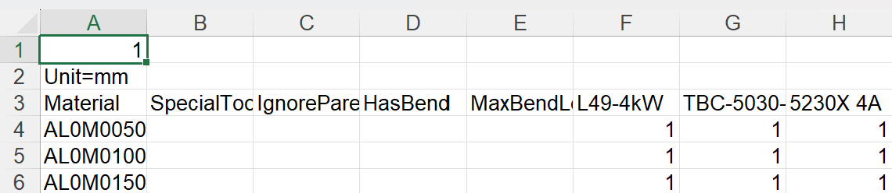

Routes
Selon votre licence, TruSmartCAM disposera d’un ensemble par défaut de machines CAM et de configurations de gammes. Vous pouvez personnaliser ces configurations afin de les adapter à vos flux de production spécifiques.

Sur la page des routes, les machines sont représentées sous forme de stations de traitement, chacune identifiée par une image et un nom.
Les routes relient les stations et montrent les chemins de flux possibles qu’une pièce peut suivre du début à la fin. Vous pouvez afficher les propriétés d’une station en la survolant avec la souris.
Un clic sur une station ouvre un panneau contenant des informations détaillées sur cette station, notamment son nom, son type et son état de disponibilité.
-
Pour modifier la disponibilité d’une station, cliquez sur la station et activez ou désactivez la case à cocher Enabled dans le panneau.
Exporter/Importer les configurations de gammes
La fonctionnalité Export/Import permet aux utilisateurs d’enregistrer leurs configurations de gammes actuelles et de les appliquer à d’autres projets ou instances.
Exporter les routes CAO
Cliquez sur Export CAD routes… pour enregistrer toutes les règles de conditions de route actuelles dans un fichier CSV.

Le fichier CSV répertorie les matières et leurs conditions de gamme. Les colonnes représentent les noms de machines et les conditions (par exemple Material, SpecialTool, HasBend, MaxBendLength). Une valeur de 1 indique un routage vers une machine ; une cellule vide signifie l’absence de routage.
Vous pouvez modifier ce fichier CSV et le réimporter dans le système.
Importer les routes CAO
Utilisez Import CAD routes… pour appliquer un fichier CSV modifié.
| Avant l’importation, exécutez Reset CAD routes pour effacer les configurations existantes. |
Le système lit le fichier et met à jour les conditions de route. Les règles peuvent inclure des conditions telles que HasBend et MaxBendLength.

Si HasBend = 1, la règle s’applique aux pièces comportant des pliages.
Si MaxBendLength =1, la règle limite en outre selon la longueur du pliage le plus long de la pièce.
La pièce 00.13 a un pliage le plus long de 500 mm. Elle correspond à la première règle, donc TBC-5030-V2 est exclue.

Réinitialiser les routes CAO
Utilisez Reset CAD routes pour effacer toutes les configurations existantes avant d’importer un nouveau fichier CSV.
| Si vous importez sans réinitialiser, les anciennes règles peuvent entrer en conflit avec les nouvelles. |